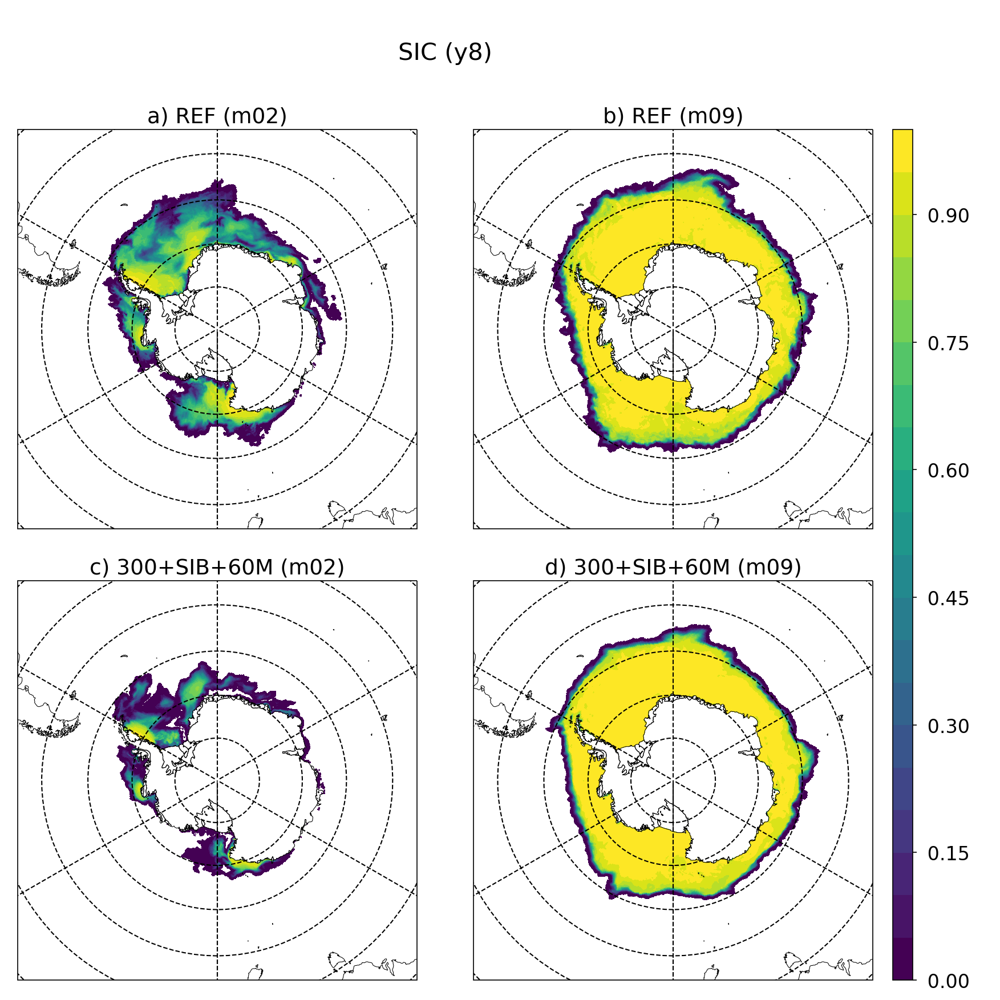

eORCA025.L121-OPM015¶
Summary¶
Namelist¶
Only the change compare to the reference (eORCA025.L121-OPM006) a mentioned here:
namelist_oce¶
namtsd¶
Because of the issue (Input file) in reference simulation (eORCA025.L121-OPM006), input file hase been updated.
!-----------------------------------------------------------------------
&namtsd_drk ! Temperature & Salinity Data (init/dmp) (default: OFF)
! ! if key_drakkar, **only** namtsd_drk is read
!-----------------------------------------------------------------------
ln_tsd_init = .true. ! Initialisation of ocean T & S with T &S input data (T) or not (F)
ln_tsd_dmp = .false. ! damping of ocean T & S toward T &S input data (T) or not (F)
cn_dir = './' ! root directory for the location of the temperature and salinity file
!___________!_____________________________________!___________________!___________!_____________!________!___________!_____________!__________!_______________!
! ! file name ! frequency (hours) ! variable ! time interp.! clim ! 'yearly'/ ! weights ! rotation ! land/sea mask !
! ! ! (if <0 months) ! name ! (logical) ! (T/F) ! 'monthly' ! filename ! pairing ! filename !
! data used for initial condition (istate)
sn_tem_ini = 'eORCA025.L121_WOA2018_c3.0_d1.0_v19812010.5.1', -1., 'votemper', .true. , .true. , 'yearly' , '' , ' ' , ' '
sn_sal_ini = 'eORCA025.L121_WOA2018_c3.0_d1.0_v19812010.5.1', -1., 'vosaline', .true. , .true. , 'yearly' , '' , ' ' , ' '
! data used for damping ( tradmp)
sn_tem_dmp = 'eORCA025.L121_WOA2018_c3.0_d1.0_v19812010.5.1', -1., 'votemper', .true. , .true., 'yearly' , '' , ' ' , ' '
sn_sal_dmp = 'eORCA025.L121_WOA2018_c3.0_d1.0_v19812010.5.1', -1., 'vosaline', .true. , .true., 'yearly' , '' , ' ' , ' '
!
/
namsbc_ssr¶
Because of the issue (Input file) in reference simulation (eORCA025.L121-OPM006), input file has been updated.
!-----------------------------------------------------------------------
&namsbc_ssr ! surface boundary condition : sea surface restoring (ln_ssr =T)
!-----------------------------------------------------------------------
nn_sstr = 0 ! add a retroaction term to the surface heat flux (=1) or not (=0)
rn_dqdt = -40. ! magnitude of the retroaction on temperature [W/m2/K]
nn_sssr = 2 ! add a damping term to the surface freshwater flux (=2)
! ! or to SSS only (=1) or no damping term (=0)
rn_deds = -166.67 ! magnitude of the damping on salinity [mm/day]
ln_sssr_bnd = .true. ! flag to bound erp term (associated with nn_sssr=2)
rn_sssr_bnd = 4.e0 ! ABS(Max/Min) value of the damping erp term [mm/day]
nn_sssr_ice = 1 ! control of sea surface restoring under sea-ice
! 0 = no restoration under ice : * (1-icefrac)
! 1 = restoration everywhere
! >1 = enhanced restoration under ice : 1+(nn_icedmp-1)*icefrac
cn_dir = './' ! root directory for the SST/SSS data location
!___________!_________________________!___________________!___________!_____________!________!___________!___________!__________!_______________!
! ! file name ! frequency (hours) ! variable ! time interp.! clim ! 'yearly'/ ! weights e ! rotation ! land/sea mask !
! ! ! (if <0 months) ! name ! (logical) ! (T/F) ! 'monthly' ! filename ! pairing ! filename !
sn_sst = 'NOT_USED.nc' , 24. , 'sst' , .false. , .false., 'yearly' , '' , '' , ''
sn_sss = 'eORCA025_sss_WOA2018_c3.0_v19812010.5.1' , -1. , 'sosaline' , .true. , .true. , 'yearly' , '' , '' , ''
/
namtra_ldf¶
We also revert UKMO change on diffusion to get back to historical values (300m2/s)
!-----------------------------------------------------------------------
&namtra_ldf ! lateral diffusion scheme for tracers (default: NO selection)
!-----------------------------------------------------------------------
! ! Operator type:
ln_traldf_OFF = .false. ! No explicit diffusion
ln_traldf_lap = .true. ! laplacian operator
ln_traldf_blp = .false. ! bilaplacian operator
!
! ! Direction of action:
ln_traldf_lev = .false. ! iso-level
ln_traldf_hor = .false. ! horizontal (geopotential)
ln_traldf_iso = .true. ! iso-neutral (standard operator)
ln_traldf_triad = .false. ! iso-neutral (triad operator)
!
! ! iso-neutral options:
ln_traldf_msc = .false. ! Method of Stabilizing Correction (both operators)
rn_slpmax = 0.01 ! slope limit (both operators)
ln_triad_iso = .false. ! pure horizontal mixing in ML (triad only)
rn_sw_triad = 1 ! =1 switching triad ; =0 all 4 triads used (triad only)
ln_botmix_triad = .false. ! lateral mixing on bottom (triad only)
!
! ! Coefficients:
nn_aht_ijk_t = 20 ! space/time variation of eddy coefficient:
! ! =-20 (=-30) read in eddy_diffusivity_2D.nc (..._3D.nc) file
! ! = 0 constant
! ! = 10 F(k) =ldf_c1d
! ! = 20 F(i,j) =ldf_c2d
! ! = 21 F(i,j,t) =Treguier et al. JPO 1997 formulation
! ! = 30 F(i,j,k) =ldf_c2d * ldf_c1d
! ! = 31 F(i,j,k,t)=F(local velocity and grid-spacing)
! ! time invariant coefficients: aht0 = 1/2 Ud*Ld (lap case)
! ! or = 1/12 Ud*Ld^3 (blp case)
rn_Ud = 0.022 ! lateral diffusive velocity [m/s] (nn_aht_ijk_t= 0, 10, 20, 30)
rn_Ld = 200.e+3 ! lateral diffusive length [m] (nn_aht_ijk_t= 0, 10)
/
namtra_eiv¶
Based on UKMO test and Julie D. discussion we switch one GM (300m2/s)
!-----------------------------------------------------------------------
&namtra_eiv ! eddy induced velocity param. (default: OFF)
!-----------------------------------------------------------------------
ln_ldfeiv = .true. ! use eddy induced velocity parameterization
!
! ! Coefficients:
nn_aei_ijk_t = 21 ! space/time variation of eddy coefficient:
! ! =-20 (=-30) read in eddy_induced_velocity_2D.nc (..._3D.nc) file
! ! = 0 constant
! ! = 10 F(k) =ldf_c1d
! ! = 20 F(i,j) =ldf_c2d
! ! = 21 F(i,j,t) =Treguier et al. JPO 1997 formulation
! ! = 30 F(i,j,k) =ldf_c2d * ldf_c1d
! ! time invariant coefficients: aei0 = 1/2 Ue*Le
rn_Ue = 0.06 ! lateral diffusive velocity [m/s] (nn_aei_ijk_t= 0, 10, 20, 30)
rn_Le = 10.e+3 ! lateral diffusive length [m] (nn_aei_ijk_t= 0, 10)
!
ln_ldfeiv_dia =.false. ! diagnose eiv stream function and velocities
nn_ldfeiv_shape = 2 ! shape of bounding coefficient (nn_aei_ijk_t= 21 only)
/
namzdf_tke¶
Based on Justine’s experiment and Rodgers et al. (https://bg.copernicus.org/articles/11/4077/2014/bg-11-4077-2014.pdf) we increase the exponential decay under the ML (nn_htau = 60 instead of 30 in the SH at high latitude)
!-----------------------------------------------------------------------
&namzdf_tke ! turbulent eddy kinetic dependent vertical diffusion (ln_zdftke =T)
!-----------------------------------------------------------------------
rn_ediff = 0.1 ! coef. for vertical eddy coef. (avt=rn_ediff*mxl*sqrt(e) )
rn_ediss = 0.7 ! coef. of the Kolmogoroff dissipation
rn_ebb = 67.83 ! coef. of the surface input of tke (=67.83 suggested when ln_mxl0=T)
rn_emin = 1.e-10 ! minimum value of tke [m2/s2] (1.e-10 is because of iwm)
rn_emin0 = 1.e-4 ! surface minimum value of tke [m2/s2]
rn_bshear = 1.e-20 ! background shear (>0) currently a numerical threshold (do not change it)
nn_pdl = 1 ! Prandtl number function of richarson number (=1, avt=pdl(Ri)*avm) or not (=0, avt=avm)
nn_mxl = 3 ! mixing length: = 0 bounded by the distance to surface and bottom
! ! = 1 bounded by the local vertical scale factor
! ! = 2 first vertical derivative of mixing length bounded by 1
! ! = 3 as =2 with distinct dissipative an mixing length scale
ln_mxl0 = .true. ! surface mixing length scale = F(wind stress) (T) or not (F)
nn_mxlice = 2 ! type of scaling under sea-ice
! = 0 no scaling under sea-ice
! = 1 scaling with constant sea-ice thickness
! = 2 scaling with mean sea-ice thickness ( only with SI3 sea-ice model )
! = 3 scaling with maximum sea-ice thickness
rn_mxlice = 10. ! max constant ice thickness value when scaling under sea-ice ( nn_mxlice=1)
rn_mxl0 = 0.04 ! surface buoyancy lenght scale minimum value
ln_drg = .true. ! top/bottom friction added as boundary condition of TKE
ln_lc = .true. ! Langmuir cell parameterisation (Axell 2002)
rn_lc = 0.15 ! coef. associated to Langmuir cells
nn_etau = 1 ! penetration of tke below the mixed layer (ML) due to NIWs
! = 0 none ; = 1 add a tke source below the ML
! = 2 add a tke source just at the base of the ML
! = 3 as = 1 applied on HF part of the stress (ln_cpl=T)
rn_efr = 0.05 ! fraction of surface tke value which penetrates below the ML (nn_etau=1 or 2)
nn_htau = 2 ! type of exponential decrease of tke penetration below the ML
! = 0 constant 10 m length scale
! = 1 0.5m at the equator to 30m poleward of 40 degrees
nn_eice = 3 ! below sea ice: =0 ON ; =4 OFF when ice fraction > 1/4
/
Input files¶
Only the file changed between the reference (Input file) and this simulation are described.
initial condition¶
variables: votemper, vosaline
frequency: monthly
sea surface salinity¶
filename: eORCA025_sss_WOA2018_c3.0_v19812010.5.1.nc
variable: sosaline
frequency: monthly
Code¶
Only changes compare to reference are presented here.
Compilation¶
XIOS: - XIOS/2.5_r1903_intelmpi-5.1.3.258
Module loaded: - gcc/8.3.0 - intel/19.4 - intelmpi/5.1.3.258 - netcdf-fortran/4.4.4-intel-19.0.4-intelmpi-2019.4.243 - netcdf/4.6.3-intel-19.0.4-intelmpi-2019.4.243 - hdf5/1.10.5-intel-19.0.4-intelmpi-2019.4.243
comments on this choice: - Netcdf is now available on Occigen with the latest intel compiler (2019.4.243) - we recompile NEMO and XIOS with the latest available compiler
Monitoring¶
Global indicators¶
On these plot you can find a time series of:
ACC transport
AMOC at rapid array
AMHT at rapid array
Net global heat fluxes
mean sst in the southern ocean (see box in the map)
mean sst in the North West Corner (see box in the map)
sea ice extent (arctic/ant in summer/winter)
Regional indicators¶
On these plot, you can find time series of:
ACC transport
Maximum of the Weddell and Ross Gyre (box where the max compute show in the map)
Mean bottom salinity over the main dense water formation hot spot (West Ross and West FRIS)
Mean bottom temperature over East Ross and Amudsen sea to monitor CDW intrusion
Local indicators¶
These plots monitor the evolution of ice shelf melting and the corresponding shelf properties (ROSS, FRIS, PINE, GETZ)
Amundsen sea¶
These plot monitoring the evolution of temperature, salinity and ice shelf melt in Amundsen sea.
Maps¶
